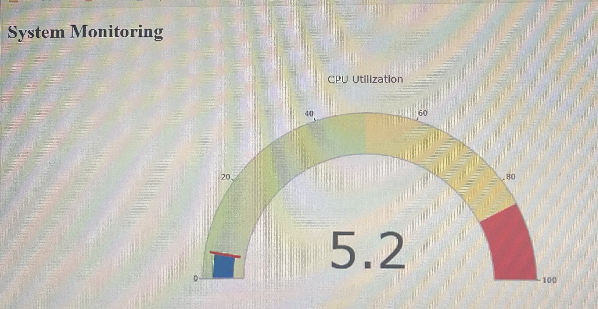

this project walk you through how to configure multiple file using HCL terraform to create your own portfolio to show up your work and deploying in a working environment.

In this Project, we have deployed a cloud native application into EKS. Once deployed and up and running, we used our local workstation's browser to test out the application. we later confirmed that our activity within the application generated data which was captured and recorded successfully within the MongoDB ReplicaSet back end within the cluster.